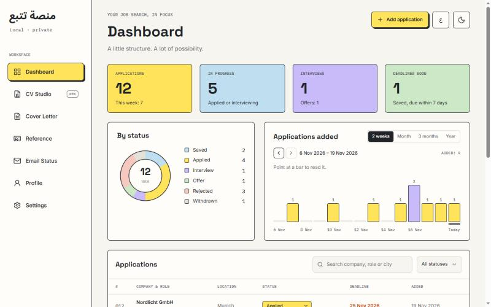
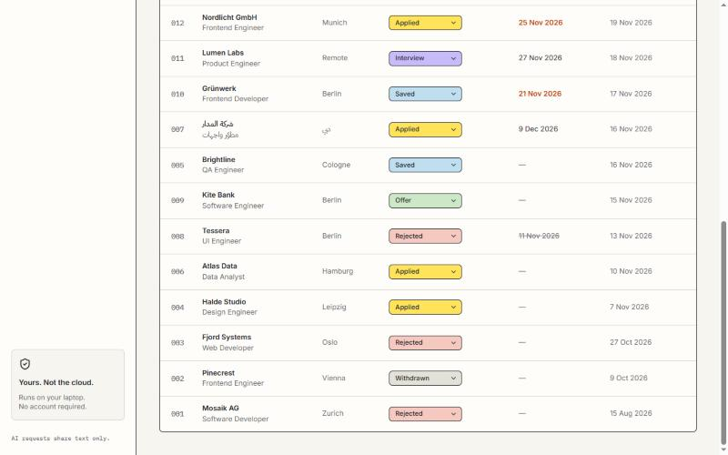
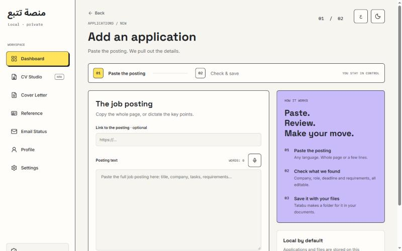
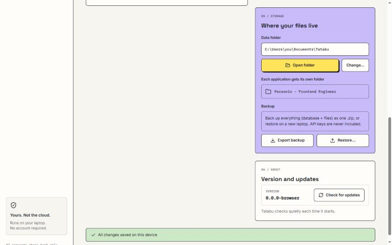
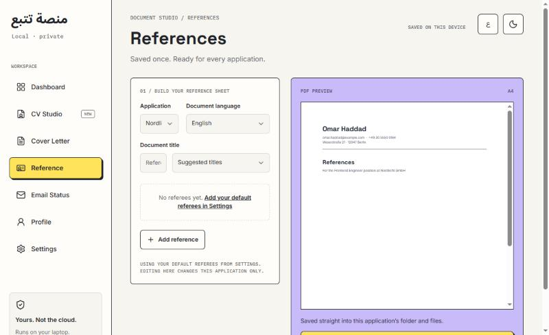
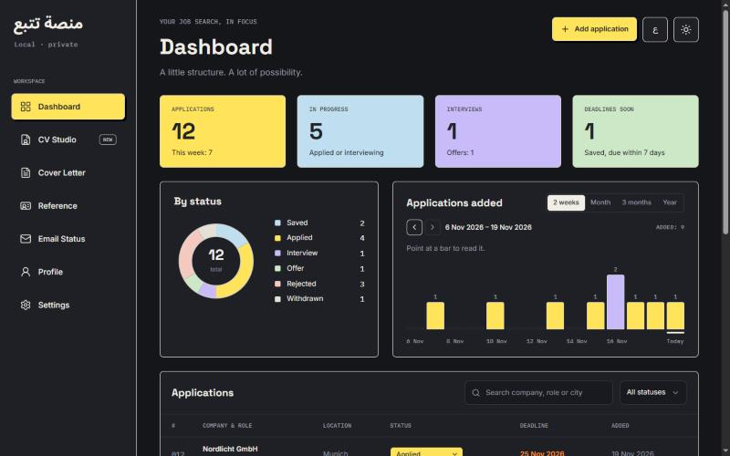

تلات وكلاء اشتغلوا بالتوازي: واحد فحص الواجهة شاشة شاشة وقاس البطاقات، واحد درس التطبيقات المشابهة، وواحد دوّر على السكيلز المناسبة. تحت: شو انضاف اليوم، معاينة حيّة لأحجام البطاقات المقترحة، أهم المشاكل، وخطة التنفيذ.
خيار جديد جنب Gemini وOpenAI وOpenRouter. بيختار تلقائياً نموذج سريع (grok-4-fast) وبيتجاهل نماذج توليد الصور، وبيعرف مين بيقرأ الصور لتصميم السيرة.
أي خدمة بتحكي واجهة OpenAI: بروكسي لـ Claude، DeepSeek، Mistral، أو Ollama على جهازك.
نفس لوحة التحكم بنفس الهوية (الأصفر، الحدود السودا، الظل الصلب)، بس بأحجام مختلفة. بدّل بين الحالي والمقترح وشوف كم صف بيبيّن بنفس المساحة.
شوية ترتيب. وكتير راحة بال.
| # | الوظيفة | المكان | الحالة | آخر موعد |
|---|---|---|---|---|
| 24 | Data Analyst Zalando | برلين | مقدّم | بعد يومين |
| 23 | Junior BI Developer SAP | والدورف | مقابلة | ٢٨ تشرين٢ |
| 22 | Werkstudent Analytics Siemens | ميونخ | محفوظ | ٣ كانون١ |
| 21 | Reporting Specialist DHL Group | بون | مقدّم | — |
| 20 | Product Analyst Delivery Hero | برلين | عرض | — |
| 19 | Data Engineer (m/w/d) Bosch | شتوتغارت | مرفوض | — |
| 18 | Analytics Trainee Allianz | ميونخ | مقدّم | — |
| 17 | BI Analyst Lidl Digital | نيكارسولم | محفوظ | ١٠ كانون١ |
لقطات أخدها وكيل الفحص من التطبيق نفسه (ببيانات تجريبية).






القيم الحالية مأخوذة من الكود. المقترحة من أنظمة تصميم رسمية (Carbon، Fluent 2، Apple HIG) ومن تطبيقات متل Linear. القاعدة: أي صف أطول من 44px، أو حشوة بطاقة أكتر من 16px، أو رقم إحصائي أكبر من 28px، بيحسّ «كبير».
| العنصر | الملف | الحالي | المقترح |
|---|---|---|---|
| عنوان الصفحة | PageHeader.tsx:38 | 38px · mb-7 | 24px · mb-4 |
| بطاقة إحصائية: الرقم | DashboardView.tsx:38 | 40px | 26px tabular |
| بطاقة إحصائية: الحشوة / الارتفاع | DashboardView.tsx:36 | px-5 py-4 · 127px | px-3.5 py-3 · ≈76px |
| بطاقتي الرسم البياني | DashboardView.tsx:55 · ActivityChart.tsx:126 | 309px | ≈210px |
| عنصر قائمة الطلبات | ApplicationsView.tsx:436 | 100px | 56–60px |
| المسافة بين البطاقات | DashboardView.tsx | gap-5 / gap-6 | gap-3 / gap-4 |
| صف الجدول | DashboardView.tsx:188 | py-3 · سطرين · 63px | py-2 · سطر واحد · 36–44px |
| بطاقة الإعدادات: الحشوة والعنوان | ui/index.tsx:75,83 | px-[19px] py-5 · 19px | px-4 py-3.5 · 15px |
| الحقول والأزرار | ui/index.tsx:37 | h-[42px] | 32–36px |
| عناصر القائمة الجانبية | Sidebar.tsx:31,36 | w-60 · gap-3 · ≈44px | w-[220px] · gap-1 · 34px |
| بطاقة «ابدأ» الصفرا (فاضي) | DashboardView.tsx:276-278 | px-9 py-10 · 40px | px-5 py-5 · 22px |
| عنصر قائمة الإعداد | DashboardView.tsx:247 | px-4 py-3 · سطرين | px-3 py-2 · وصف بالتلميح |
الأهم: كل هالقيم لازم تنحط كمتغيرات بمكان واحد (styles.css) بدل ما تكون مكتوبة بكل شاشة. هيك منقدر نضيف خيار «الكثافة» بالمظهر متل ما في بالمعاينة فوق.
الوكيل شغّل التطبيق بـ 12 طلب تجريبي وقاس كل شي على 1280×800 و1024 وأصغر نافذة (1180×720)، بالعربي والإنكليزي، فاتح وغامق. المشكلة مش بشاشة وحدة: نفس الإعدادات المشتركة منفوخة بكل مكان، فالحل بكم ملف مشترك.
بأي صفحة طويلة (لوحة التحكم، الإعدادات، إضافة طلب) أزرار التنقل بتطلع لفوق وما بيضل غير بطاقة الخصوصية. الحل سطر واحد: sticky top-0 h-screen. Sidebar.tsx:31 · AppShell.tsx:33
على 1280×800: زر «استخرج» على ارتفاع 870px، «احفظ» على 1108px، «فصّل السيرة» على 1043px، «اكتب الرسالة» على 1013px. ولوحة التحكم ما بتبيّن ولا صف من جدول الطلبات بدون تمرير. AddApplicationView · CvStudioView · CoverLetterView
صفر breakpoints وأعمدة جانبية بعرض ثابت (320 لـ 500px). بأصغر نافذة للتطبيق (1180px) حقول المراجع بتنقص: «Nordli…» و«Refer…». ReferenceView.tsx:208-244
عنوان 38px + سطر فوقه + وصف + هوامش، قبل أي محتوى، بكل شاشة. تصغيرها لحالها بيرجّع حوالي 100px لكل صفحة. PageHeader.tsx:25-39 · AppShell.tsx:35
8 نسخ مختلفة من «Panel» بـ 5 حشوات و8 أحجام عناوين، و23 حجم خط بالتطبيق كله. لهيك ما فينا نصغّر من مكان واحد. components/ui/index.tsx + كل الشاشات
مثلاً clsx(inputClass, 'h-[38px]') بيضل 42px لأنه المشروع ما فيه tailwind-merge. أي تصغير منعمله لازم يبلش من هون. DashboardView.tsx:150,158 · ApplicationsView.tsx:85
كل حقل 42px وكل صف بنموذج 84px. تطبيقات سطح المكتب بتستخدم 28 لـ 36px. ui/index.tsx:27,37,48
«محلي افتراضياً»، «ملكك مو بالسحابة»، «محفوظ على الجهاز»… كل وحدة بحجم بطاقة. مرة وحدة بالإعدادات بتكفي. AddApplicationView · EmailView · ProfileView · Sidebar
ما في رسالة خطأ ولا زر «جرّب مرة تانية». ولوحة التحكم بتطلع فاضية وقت التحميل وبعدين كل شي بينط. CvStudioView.tsx:586 · DashboardView.tsx:316
حوالي 700px فراغ بالعمود التاني، والشريط الأخضر شكله حالة بس هو ثابت. SettingsView.tsx:21-36
بتوصلها بس من صفوف لوحة التحكم أو زر الرجوع، والقائمة بتضوّي «لوحة التحكم» بدالها. Sidebar.tsx:13-21
الأصفر والبنفسجي بنفس قوتهن على خلفية #15161a، وفي 3 درجات أحمر مختلفة للخطر. styles.css:28-38
ولا واحد منهم محلّي، ولا بيقبل مفتاحك الخاص، ولا بيدعم العربي. هاد تميّزك. بس بالواجهة كلهم أخف: بطاقة اللوح سطرين أو تلاتة، والتفاصيل بلوحة جانبية.
مضغوط / افتراضي / مريح بالمظهر، وكل البطاقات والصفوف بتقرأ من نفس المتغيرات.
جدول بصف 36px وتعديل الحالة من مكانها، واللوح (Kanban) زر تبديل.
كبسة على الطلب بتفتح لوحة 440px جنب الجدول بدل صفحة جديدة. بيخفف مشاكل زر الرجوع.
4 بطاقات صغيرة بتغيّر أسبوعي، وتحتها «متابعات مستحقة» و«مقابلات جاية».
كل تعديل بيقول أي متطلب بيغطّي، وبتقبله أو ترفضه لحاله، ونسبة التطابق قبل وبعد.
حقلين جداد لكل طلب، والمتأخر بيطلع أحمر. هنن اللي بيعبّوا لوحة التحكم.
«لقينا 3 تحديثات» وكل واحد فيه موافقة أو تجاهل، بدل ما تتغيّر لحالها.
الأصفر للإجراء الأساسي والمكان الحالي. البطاقات الملونة الكبيرة بتخلّي كل شي يصرخ بنفس الوقت.
الخط العربي بيحتاج ارتفاع سطر أكبر، فإذا الصفوف والأزرار ما إلها ارتفاع ثابت، كل شي بيتمطّ لحاله. هاد غالباً جزء من إحساسك إنها كبيرة.
uppercase ولا تباعد أحرف على العربي (مثلاً label-mono).dir="auto" على أسماء الشركات والوظائف الإنكليزية.كتير من سكيلز التصميم المنزّلة معمولة لصفحات الهبوط وبتطالب بمسافات أكبر، يعني عكس اللي بدنا ياه.
ما انزّل شي. الأوامر للمراجعة، وكل سكيل لازم نقرا ملفه قبل ما ننزّله.
عربي وإنكليزي، فاتح وغامق، لنقارن بالآخر.
حشوات، ارتفاعات، أحجام خطوط، بـ styles.css ومعها خيار الكثافة بالمظهر. interface-design design:design-system
Card وStatCard وعنوان الصفحة والقائمة الجانبية. هاد لحاله بيغيّر الإحساس بكل التطبيق. impeccable layout impeccable distill
صف واحد لكل طلب، بطاقات أرقام أصغر، و«الخطوة الجاية». dataviz
ارتفاعات ثابتة، أيقونات، أرقام. arabic-rtl
التباين بعد التغييرات، التركيز، وصور «بعد». design:accessibility-review impeccable polish